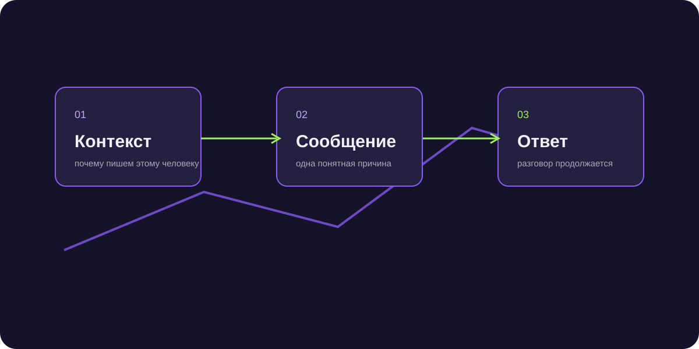

Первичный контакт с клиентом: как начать диалог без шаблонного спама
Первичный контакт с клиентом в B2B определяет весь дальнейший ход переговоров: первое впечатление формируется за 5 секунд чтения сообщения, и от точности повода зависит, перейдет ли адресат к диалогу или отправит контакт в блок.

Короткий ответ
Первичный контакт с клиентом должен содержать персонализированный повод для обращения, краткую суть пользы без самовосхваления и простой открытый вопрос с низким порогом входа. Категорически запрещено присылать громоздкие презентации, запрашивать созвон в первом же предложении или использовать шаблонные манипуляции. Задача первого касания — получить подтверждение, что тема актуальна.
Золотой стандарт структуры первого сообщения в Telegram
Современный руководитель читает сообщения на экране смартфона. Текст должен укладываться в один экран без скролла (до 500 знаков):
- Контекст и точка контакта: «Иван, добрый день! Увидел ваш доклад на конференции...» или «Заметил, что открыли новый филиал в Казани...».
- Актуальная гипотеза боли: «Обычно на этом этапе компании сталкиваются с перегрузкой отдела клиентской поддержки».
- Конкретный пример результата: «Мы решили схожую задачу для ритейлера Х, сократив время первого ответа до 40 секунд».
- Легкий вопрос-призыв: «Подскажите, актуален ли для вас этот вопрос в текущем квартале?».
Чего никогда нельзя делать при первом выходе
Три смертных греха коммерческого аутрича, убивающих конверсию в ноль:
- «Здравствуйте! Предлагаем взаимовыгодное сотрудничество»: самый верный способ улететь в спам. В сообщении нет конкретики.
- Требование 30 минут звонка: незнакомый человек не будет тратить полчаса своего рабочего времени на неизвестную компанию. Сначала продайте идею диалога.
- Отправка ссылок и PDF-файлов без согласия: службы безопасности и алгоритмы мессенджеров пессимизируют аккаунты, рассылающие файлы незнакомцам.
Как реагировать на разные типы ответов
Если клиент ответил «не актуально», поблагодарите за честность и уточните, когда имеет смысл вернуться. Если спросил «сколько стоит?», не называйте абстрактную вилку цен — задайте один уточняющий вопрос по объему задач, чтобы привязать расчет к его специфике.
Рост конверсии в ответ с 4% до 26% за счет смены первого вопроса
Для сервиса факторинга замена призыва «давайте созвонимся на 15 минут» на простой вопрос «работаете ли сейчас с отсрочкой платежа от сетей?» подняла долю вовлеченных в переписку финдиректоров в 6.5 раз.